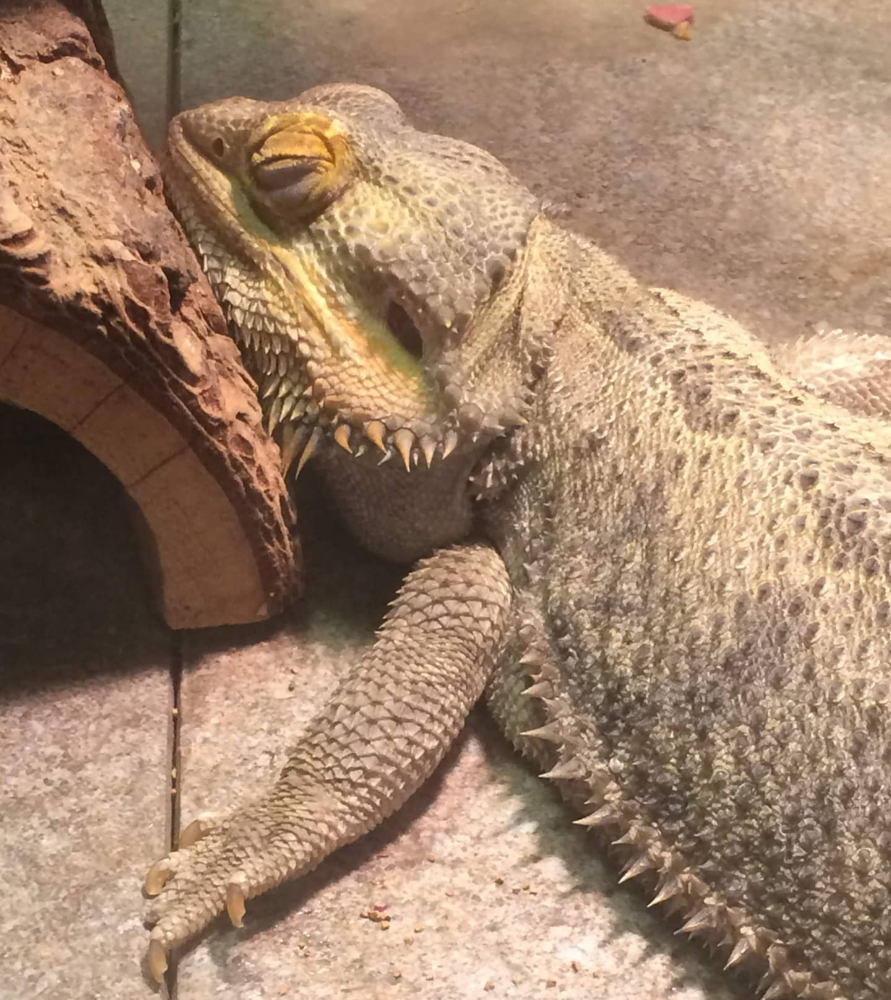

Bearded Dragon Care
Tank Setup

An adult bearded dragon needs a 40-gallon tank as a bare minimum, but the larger the tank the more space your dragon has to move around and the happier they will be. Young bearded dragons can be kept in a smaller habitat to help them catch their food. For what you should put into the tank, your dragon needs a basking spot that is kept at 100F-115F. This is needed to allow the dragon to digest their food. They also need climbing elements and enrichment elements. Lastly, they will need a cave to have shade.
Lighting and heating
Bearded dragons need a constant heat of 100F- 115F during the day time on their basking spot, and 65F-85F during the night. Having your lights set on a timer helps keep the daytime and nighttime on a reliable schedule. You need a heat light, a nighttime heat light, and a UVB light for digestion. For the UVB light beardies need a 10 T5 HO UVB bulb. These should be replaced every 6-12 months even if the bulb is still lighting up.
Diet
Babies need a ratio of 80% insects to 20% vegetables, while adults need inversed 20% insects and 80% vegetables. A salad should be provided daily so the beardie can choose to eat out of it throughout the day. Water can be misted onto the salad to help hydrate. A water dish should also be provided and changed daily. Baby bearded dragons need insects 2-3 times a day, while adults can be given insects 2-4 times a week. Bearded dragons should be given a variety of foods to keep them healthy.
To Avoid
Metabolic bone disease is a common disease in captive bearded dragons due to lack of calcium provided by the owners. To prevent this buy calcium dust usually sold at any pet shop with reptiles, and dust a little on their insects. Another common issue is impaction. This can be caused by using the wrong substrate. Bearded dragons have sticky tongues and will pick up substrate on the ground when they eat insects. Sand should not be used as a substrate since it is the most common to cause impaction. Some soils are better for using as substrate, but many keepers of bearded dragon recommend tile as it wont cause impaction and it soaks up heat well.